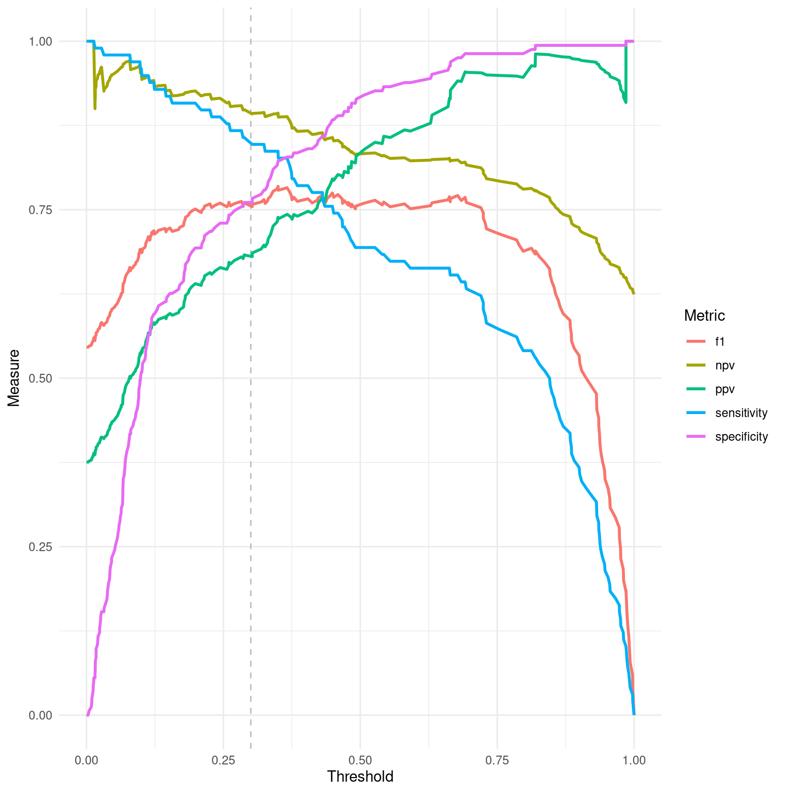

Generates a line plot to visualize various diagnostic measures across different threshold values for a binary classification model. This visualization can help in selecting an optimal threshold based on the trade-offs between different measures.
Value
A ggplot object representing the diagnostic measures across thresholds
with the ability to further customize if desired.
Details
The function plots multiple lines representing different diagnostic measures such
as NPV, PPV, sensitivity, specificity, and F1 score across a range of threshold
values. Each line corresponds to a specific metric, illustrating how the measure
changes as the classification threshold is varied. A vertical dashed line indicates
the set threshold in the dx object for reference.
This plot is particularly useful for understanding the behavior of a classifier under different operating conditions and for identifying a threshold that balances the trade-offs between various measures according to the specific needs of the application.
Examples
dx_obj <- dx(
data = dx_heart_failure,
true_varname = "truth",
pred_varname = "predicted",
outcome_label = "Heart Attack",
setthreshold = .3
)
dx_plot_thresholds(dx_obj)
